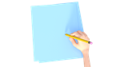

Fijaos, parece que Dulcinea tiene problemas para entender a Sancho...
Aparte de alguna que otra falta de ortografía (¡bastantes!), a Sancho se le ha olvidado poner las tildes. Sí, esa rayita inclinada que ponemos sobre la vocal tónica de una palabra según las reglas de acentuación.
Fijaos si es importante acentuar correctamente que algunas palabras solo las podemos diferenciar por la tilde. ¿O dirías que significa lo mismo "La violencia domestica" que "La violencia doméstica" o "Él vino de Jerez" que "El vino de Jerez"? ¡Ay, qué sería de nosotros sin las tildes!
Como buenos brigadistas nos lanzamos al rescate de la TILDE, nuestra primera especie protegida. Dependiendo del empeño que pongamos en esta tarea, ganaremos una cantidad u otra de puntos, con los que seguiremos rellenando nuestra Cartilla del brigadista. ¡Empieza el primer reto!
En grupo, ved los vídeos y leed la teoría sobre las reglas de acentuación. Cada miembro del equipo debe hacer un resumen (con ejemplos) en su Portafolio personal.
Aprendemos
Llamamos acento a la mayor intensidad con que pronunciamos una determinada sílaba de una palabra. Esa sílaba, llamada sílaba tónica (que puede o no llevar tilde) queda destacada de esa manera.
1. Repasamos las REGLAS GENERALES de ACENTUACIÓN:
- Las palabras agudas llevan tilde cuando acaban en vocal, -n o -s: cantó, camión, compás.
- Las palabras llanas o graves llevan tilde cuando acaban en consonante distinta de -n o -s: lápiz, dócil, azúcar.
- Las palabras esdrújulas y sobresdrújulas llevan siempre tilde: película, médico, tráetela.
Lo vemos mejor en el vídeo de la Eduteca  Acentuación de palabras agudas, llanas y esdrújulas.
Acentuación de palabras agudas, llanas y esdrújulas.
2. Pero todavía hay más... Ahora nos ocupamos de la acentuación de DIPTONTOS e HIATOS con la presentación  "Hoy ponemos el acento sobre...":
"Hoy ponemos el acento sobre...":
3. Y la cosa se complica con los casos de TILDE DIACRÍTICA, esa tilde que ponemos en algunas palabras, sobre todo en los monosílabos, para diferenciarlas: dé (del verbo "dar") / de (preposición). ¡Uuufff! Vaya lío, ¿no? Pero esto no es nada para un valiente brigadista. ¡Repasamos!
4. Si aún nos quedan dudas sobre el uso de la tilde, consultamos el documento de apoyo  "Reglas de acentuación".
"Reglas de acentuación".
Cuando hayamos consultado todos los documentos y realizado el resumen, de forma individual, cada miembro del equipo revisará en su cuaderno de Lengua (o de otra asignatura) ejemplos de palabras en los que suela equivocarse al aplicar estas reglas y se hará un listado con ellas para no volver a equivocarse. Cuantos más, mejor.
Practicamos
 Ahora que hemos repasado todas las reglas de acentuación, ha llegado el momento de aplicarlas. Realiza los ejercicios interactivos sobre palabras agudas, llanas y esdrújulas de esta página y sube pantallazo de tu resultado a Classroom.
Ahora que hemos repasado todas las reglas de acentuación, ha llegado el momento de aplicarlas. Realiza los ejercicios interactivos sobre palabras agudas, llanas y esdrújulas de esta página y sube pantallazo de tu resultado a Classroom.
Creamos
Con todo lo que ya sabemos, ¡ha llegado la hora de crear!
EL CONTENIDO
En equipo, elaboramos una infografía que recogerá lo esencial de lo que hemos estudiado sobre las reglas de acentuación:
- Reglas generales de acentuación: agudas, llanas y esdrújulas.
- Acentuación de diptongos, triptongos e hiatos.
- Tilde diacrítica.
EL MÉTODO DE TRABAJO
Organizamos el trabajo de la siguiente manera:
PASO 1. En clase, repartimos entre los miembros de la brigada los aspectos que hay que abordar (expuestos en el apartado "El contenido").
PASO 2: Hacemos un boceto. Con el contenido claro, seleccionamos cuidadosamente la información que incluiremos en ella.
Elegimos diseño. Decidimos cuál va a ser la distribución del contenido y los elementos gráficos (dibujos o imágenes) que vamos a utilizar. Los buscamos en la Red, pero escogemos solo aquellas imágenes o iconos con licencia CC (Creative Commons). Si no sabemos cómo hacerlo, el documento "Búsqueda de imágenes con licencia CC" nos servirá de ayuda.
Si te faltan ideas, puedes inspirarte con los ejemplos del Profesor Don Pardino.
LA HERRAMIENTA
PASO 3: En casa, cada miembro del equipo hace su infografía. Hay dos opciones:
- Crear las tarjetas en cartulina, utilizando rotuladores con colores vistosos para resaltar la información más importante. Y, al terminar, incluso podemos plastificarlas. De esta manera, las tendremos disponibles en nuestra clase para consultarlas en cualquier momento.
- Utilizar una herramienta digital (Canva). En este caso, una vez terminado el trabajo, enviadlo a la profesora a través de Classroom.
Evaluamos
Tanto si el trabajo ha sido manual como digital, lo compartimos con nuestra profe, que lo evaluará de acuerdo con la  "Rúbrica de evaluación de las tarjetas ortográficas".
"Rúbrica de evaluación de las tarjetas ortográficas".
También podemos hacer una puesta en común en el grupo clase, de manera que cada equipo de trabajo sea evaluado por el resto de grupos. En tal caso, cada brigada dispondrá de una rúbrica impresa por cada grupo que tendrá que evaluar.
Y para terminar, no podemos olvidarnos de anotar los puntos obtenidos en nuestra Cartilla del brigadista.
Palabra de una sola sílaba (un solo golpe de voz): sol, pan, pez, sed...